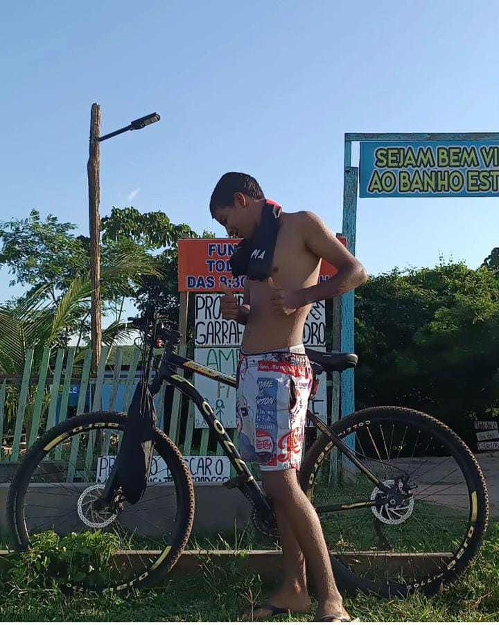

MINHAS ESPECIALIDADES.
Titulo
(Ainda a decidir)
Titulo
(Ainda a decidir)
Titulo
(Ainda a decidir)

MUITO PRAZER, SOU LUCAS BRAGA.
Sejam bem-vindos familia, eu sou estudane do curso de informatica, sou apaixonado pelo curso e estou ancioso em aprender mais, pois um dia quero me formar como um tecnico, a melhor esolha que fiz foi vir para o IFMA.